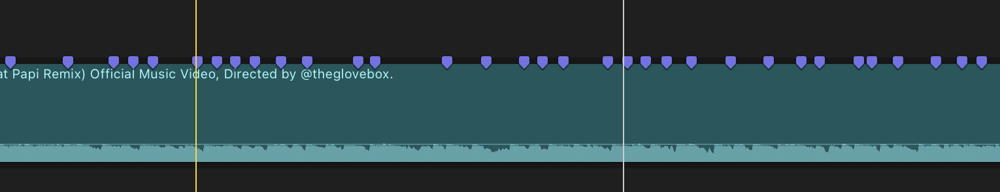

TECHNOLOGIA / FILM / AI
Witaj w świecie
Tech2u.
Testuję technologię, opowiadam obrazem i tworzę narzędzia, które pomagają montować szybciej oraz lepiej.
READY FOR THE NEXT FRAME

 FEATURE REVIEW
FEATURE REVIEW
YT
Duże testy.
Zobacz najnowszy film ↗
YOUTUBE
Duże testy.
Zero nudy.
 BEHIND THE REVIEW
BEHIND THE REVIEW
IG
INSTAGRAM
Nowe kadry.
Zajrzyj za kulisy ↗
Nowe kadry.
Nowe spojrzenie.

FAST TECH
TK
Technologia
Przejdź do shortów ↗
TIKTOK
Technologia
w dobrym
tempie.
TECH2U
NEWS + PREMIERES
FB
FACEBOOK
Wszystko
Dołącz do społeczności ↗
Wszystko
w jednym
miejscu.
02 TWÓRCA + DEWELOPER
TECH2U W PIGUŁCE
Filmy dla
emocji.
Narzędzia dla
flow.
W Tech2u łączę testowanie sprzętu, montaż filmów i AI. Dobre technologie powinny ułatwiać życie, a dobry montaż powinien dawać widzowi energię od pierwszej sekundy.
RECENZJE 01
MONTAŻ 02
AI TOOLS 03
03 / BASSMARKER PRO / FINAL CUT PRO

SCROLL TO DROP THE BEAT MARKERS
AI DLA MONTAŻYSTÓW
BassMarker
Pro.
Wykrywa beaty i automatycznie ustawia markery w Final Cut Pro. Dzięki temu kolejne cięcie zaczyna się dokładnie tam, gdzie muzyka tego potrzebuje.
BEAT DETECTIONFCPX READY24 / 25 / 30 / 60 FPS
Chcę BassMarker Pro ↗
MOJE GŁÓWNE MIEJSCE
Recenzje
technologii,
której używasz.
Auta, drony, sprzęt do tworzenia i technologiczne rzeczy, które naprawdę warto sprawdzić przed zakupem.